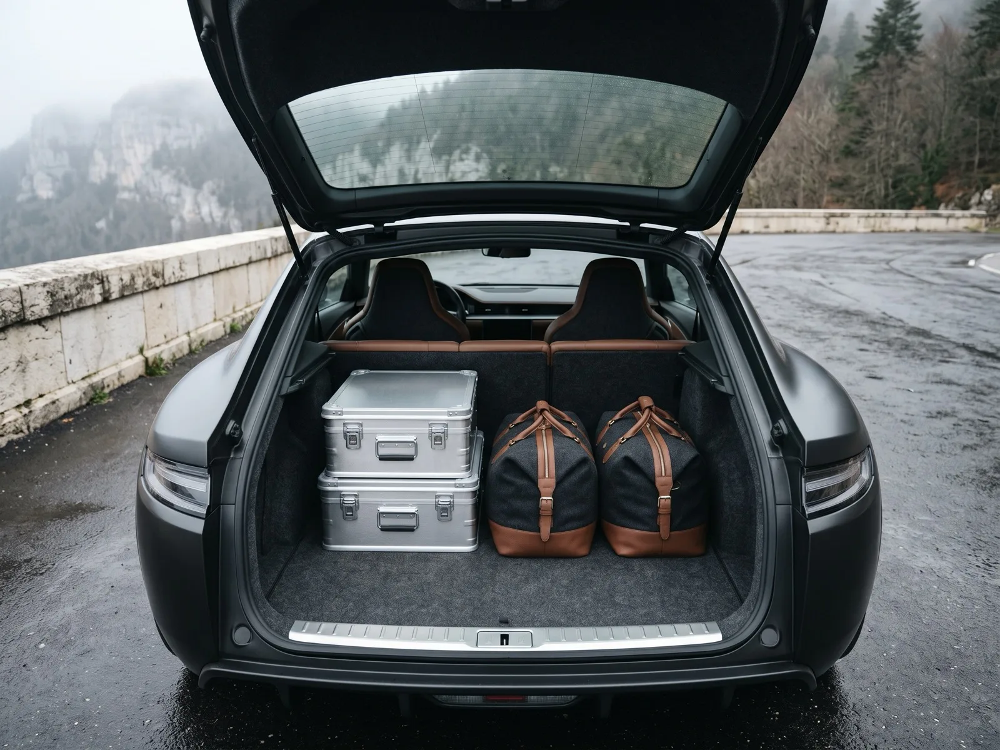
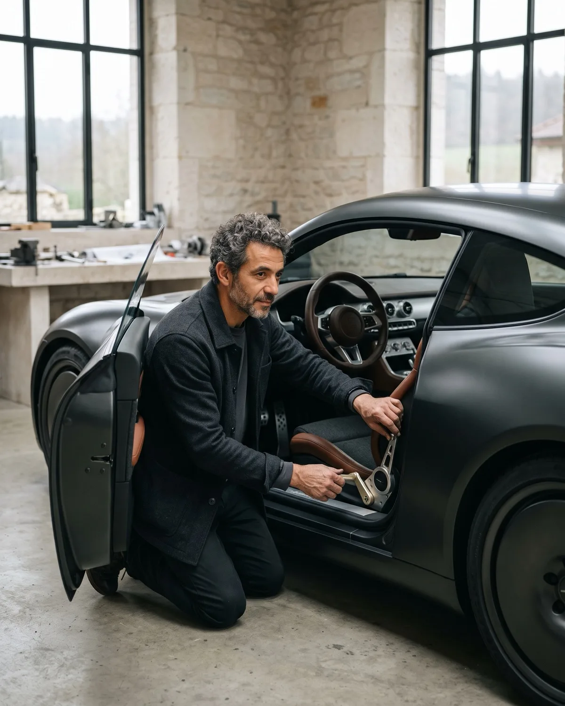
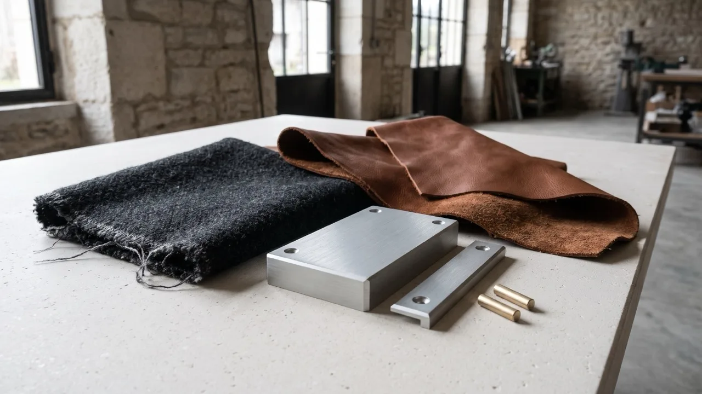
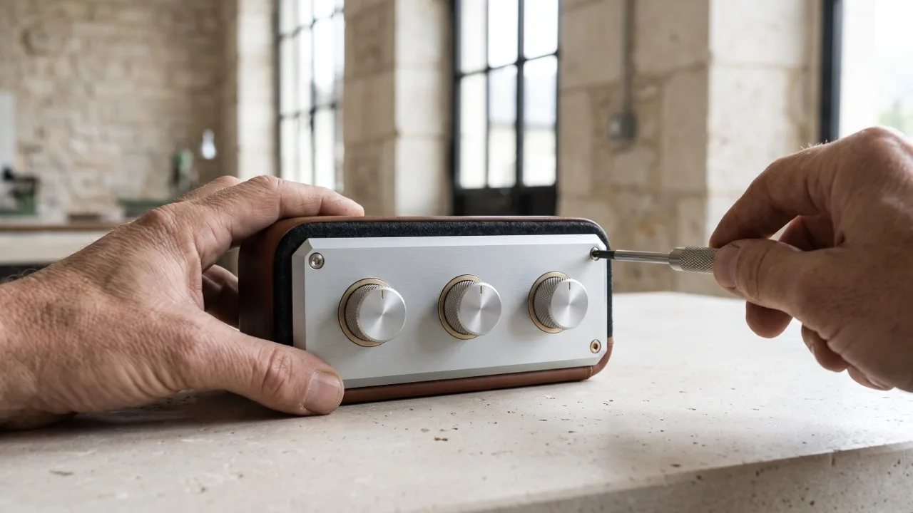
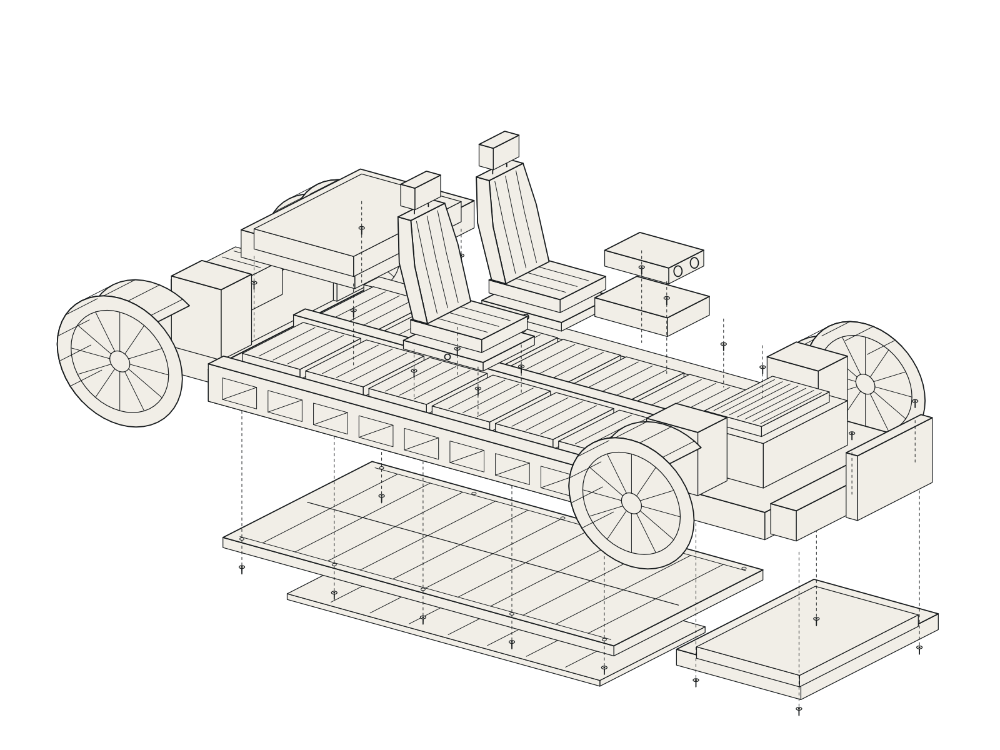
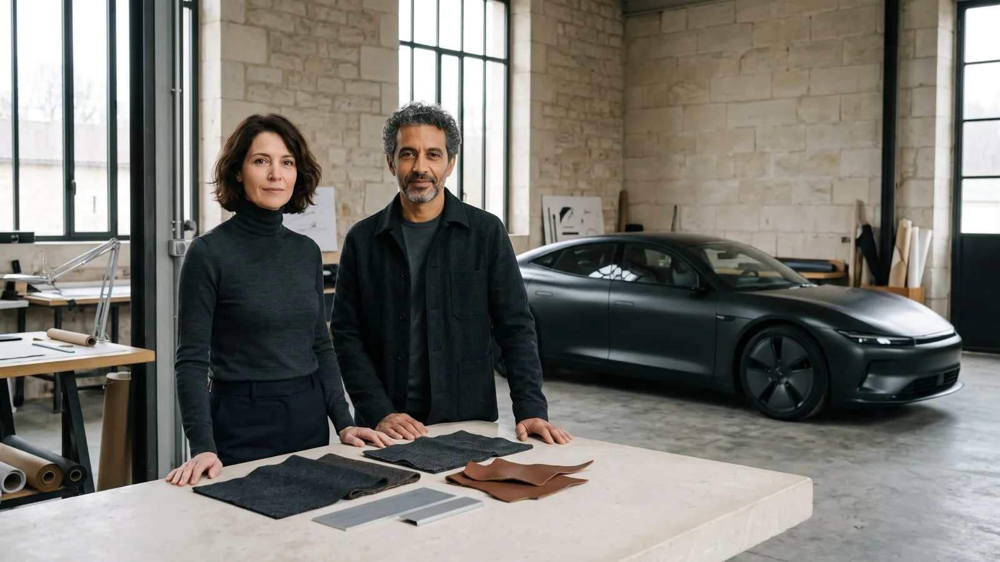

The Veyravel 01
Made for the distance between places.
An electric grand tourer. Two seats. Up to 180 commissions a year.
Demonstration email draft
01 / The journey
Two seats. A week’s luggage. Your own measure.
Two fitted cases and two weekend bags sit behind the seats. The 01 is shaped for the journeys you make together, with room for what you take.
- 4.78 m
- Length
- 1.89 m
- Width, excluding mirrors
- 360 L
- Luggage capacity

02 / Personal fit
Your first appointment begins in the seat.
We adjust its support, place your luggage behind you and take the 01 onto the roads above the atelier. The fitting record grows from the way you intend to travel.
Seat support · Steering reach · Pedal position

03 / Materials & assembly
Wool. Leather. Aluminium.
At the worktable, samples sit beside the components they become. Contact surfaces and trim can be replaced individually.


04 / Development programme
Figures, with their conditions.
The programme follows loaded motorway journeys, broken secondary roads and repeated charging stops. The figures below are development targets, not verified results.
- 520 km
- Target combined WLTP range
- 27 min
- Target DC charge, 10–80%
- 450 kW
- Target combined output
Charging target requires a conditioned battery and a suitable charger. Homologation and independent route results are not yet available.
Read the proposed test method
Record ambient temperature, speed, luggage load, consumption, charging time and cabin noise on motorway and rough secondary-road routes. Repeat in winter conditions and publish the complete charging curve with battery temperature and charger conditions. Independent witnessing and final methodology remain to be arranged.
View evidence status
Development targets only. No homologated range, independently witnessed route report or verified charging result is available in this demonstration. Figures will be replaced or qualified when documented results are available.
05 / Continued ownership
Made to remain in use.
Replaceable upholstery. Accessible battery modules. Core driving functions without a cloud account.
The proposed ownership agreement provides parts and diagnostic support for 15 years after the final 01 is built. Written terms and the supporting service evidence must be reviewed before commissioning.

06 / The house
One atelier. A shared worktable.
Iria Veyravel, a vibration engineer, and Lucan Esmeret, a coachbuilder, founded the house in 2017. Near Saint-Claude in the French Jura, fitting, assembly and the appointment salon share one roof.

07 / Private appointment
Begin with the journey you make.
Allow three hours for a personal fitting and an extended drive on the roads above the atelier. Bring your companion, your luggage and the route you know by heart.
Opens a demonstration email draft. No appointment is booked.
Appointment office
Saint-Claude, French Jura
Demonstration address — not monitored.